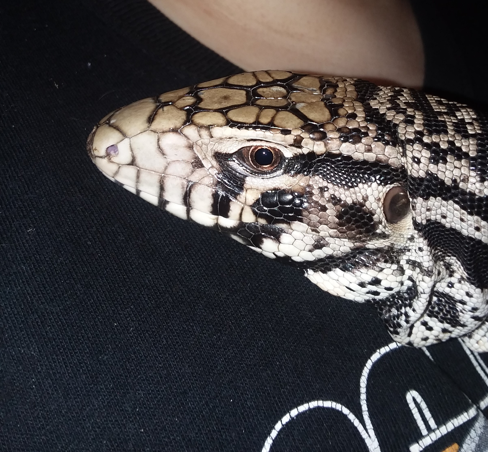

 Tegu Room
home
gender
husbandry
food
Gender
Female
smaller jowels
slender body
often gets agressive durring breading season
smaller length (about 3 feet)
Male
Have cloacal spurs (2 little raised spots on either side of the vent)
often larger jowels
larger length (between 4.5 feet to 5.5 feet)
better temperment